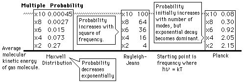

Probability for Higher Energy
Why does the Planck radiation curve fall below the classical Rayleigh-Jeans Law? The origin of the drop involves the probability of higher frequency (higher energy) modes being occupied. It may be helpful to compare to the probability for higher energies in an ideal gas as given by the Maxwell distribution.
Given an energy on the order of the thermal energy, what is the probability that the system could be found at multiples of that energy?

The classical view treats all electromagnetic modes of the cavity as equally likely because you can add an infinitesmal amount of energy to any mode. The quantum view expressed in the Planck hypothesis is that you either add the energy of a whole photon, or you don't add any at all. Since the excitation of a high frequency photon takes an energy high above the average thermal energy, it is therefore less likely. Thus the radiation curve falls progressively further below the classical expectation.
|
Index
Blackbody radiation concepts |